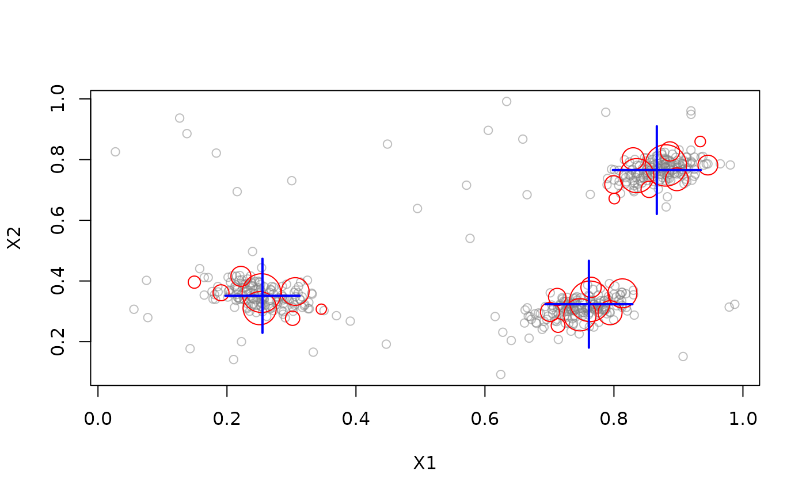
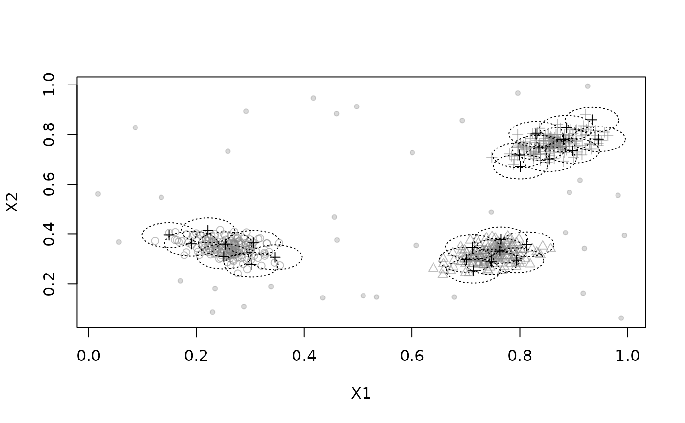
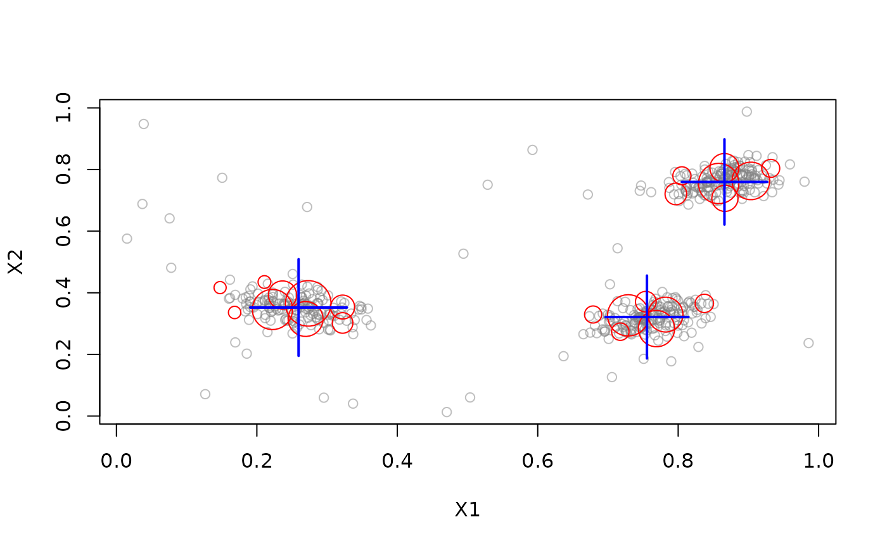
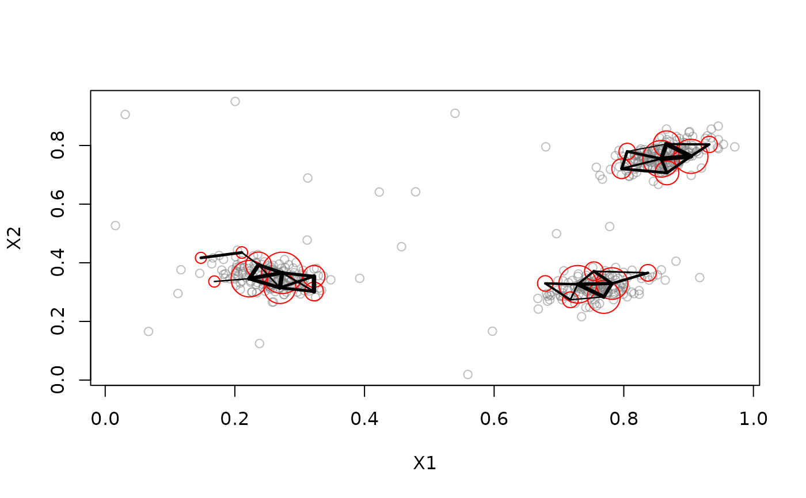
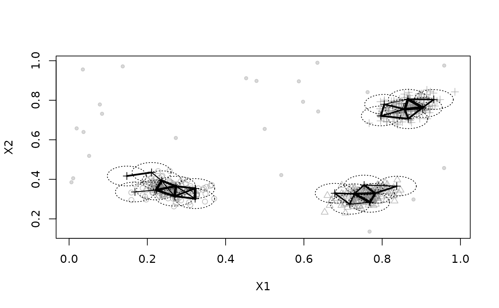
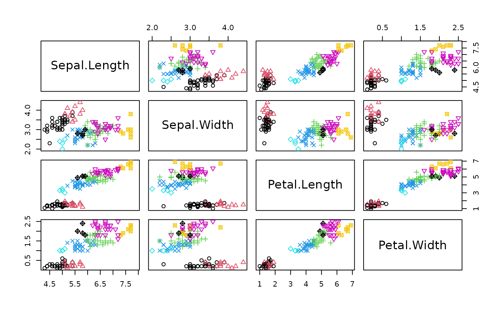
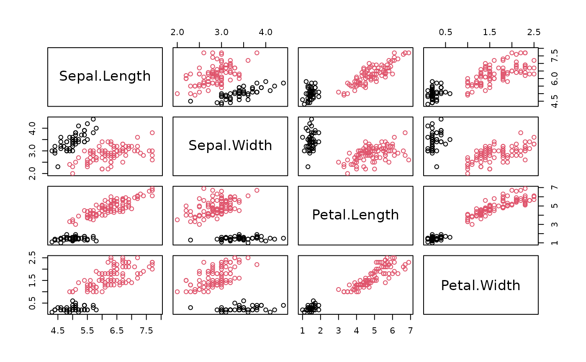
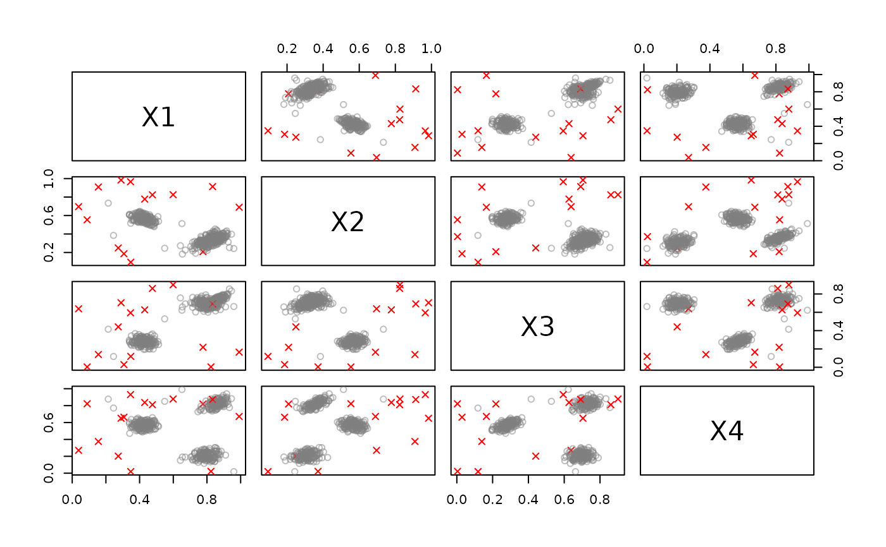

Micro Clusterer with reclustering. Implements a simple density-based stream clustering algorithm that assigns data points to micro-clusters with a given radius and implements shared-density-based reclustering.
Usage
DSC_DBSTREAM(
formula = NULL,
r,
lambda = 0.001,
gaptime = 1000L,
Cm = 3,
metric = "Euclidean",
noise_multiplier = 1,
shared_density = FALSE,
alpha = 0.1,
k = 0,
minweight = 0
)
get_shared_density(x, use_alpha = TRUE)
change_alpha(x, alpha)
# S3 method for class 'DSC_DBSTREAM'
plot(
x,
dsd = NULL,
n = 500,
col_points = NULL,
dim = NULL,
method = "pairs",
type = c("auto", "micro", "macro", "both", "none"),
shared_density = FALSE,
use_alpha = TRUE,
assignment = FALSE,
...
)
DSOutlier_DBSTREAM(
formula = NULL,
r,
lambda = 0.001,
gaptime = 1000L,
Cm = 3,
metric = "Euclidean",
outlier_multiplier = 2
)Arguments
- formula
NULLto use all features in the stream or a model formula of the form~ X1 + X2to specify the features used for clustering. Only.,+and-are currently supported in the formula.- r
The radius of micro-clusters.
- lambda
The lambda used in the fading function.
- gaptime
weak micro-clusters (and weak shared density entries) are removed every
gaptimepoints.- Cm
minimum weight for a micro-cluster.
- metric
metric used to calculate distances.
- noise_multiplier, outlier_multiplier
multiplier for radius
rto declare noise or outliers.Record shared density information. If set to
TRUEthen shared density is used for reclustering, otherwise reachability is used (overlapping clusters with less than \(r * (1 - alpha)\) distance are clustered together).- alpha
For shared density: The minimum proportion of shared points between to clusters to warrant combining them (a suitable value for 2D data is .3). For reachability clustering it is a distance factor.
- k
The number of macro clusters to be returned if macro is true.
- minweight
The proportion of the total weight a macro-cluster needs to have not to be noise (between 0 and 1).
- x
A DSC_DBSTREAM object to get the shared density information from.
- use_alpha
only return shared density if it exceeds alpha.
- dsd
a data stream object.
- n
number of plots taken from the dsd to plot.
- col_points
color used for plotting.
- dim
an integer vector with the dimensions to plot. If NULL then for methods "pairs" and "pc" all dimensions are used and for "scatter" the first two dimensions are plotted.
- method
plot method.
- type
Plot micro clusters (
type="micro"), macro clusters (type="macro"), both micro and macro clusters (type="both"), outliers(type="outliers"), or everything together (type="all").type="auto"leaves to the class of DSC to decide.- assignment
logical; show assignment area of micro-clusters.
- ...
further arguments are passed on to plot or pairs in graphics.
Details
The DBSTREAM algorithm checks for each new data point in the incoming stream, if it is below the threshold value of dissimilarity value of any existing micro-clusters, and if so, merges the point with the micro-cluster. Otherwise, a new micro-cluster is created to accommodate the new data point.
Although DSC_DBSTREAM is a micro clustering algorithm, macro clusters and weights are available.
update() invisibly return the assignment of the data points to clusters.
The columns are .class with the index of the strong micro-cluster and .mc_id
with the permanent id of the strong micro-cluster.
plot() for DSC_DBSTREAM has two extra logical parameters called
assignment and shared_density which show the assignment area
and the shared density graph, respectively.
predict() can be used to assign new points to clusters. Points are assigned to a micro-cluster if
they are within its assignment area (distance is less than r times noise_multiplier).
DSOutlier_DBSTREAM classifies points as outliers/noise if they cannot be assigned to a micro-cluster
representing a dense region. The parameter outlier_multiplier specifies
how far a point has to be away from a micro-cluster as a multiplier for the radius r.
A larger value means that outliers have to be farther away from dense
regions and thus reduce the chance of misclassifying a regular point as an outlier.
References
Michael Hahsler and Matthew Bolanos. Clustering data streams based on shared density between micro-clusters. IEEE Transactions on Knowledge and Data Engineering, 28(6):1449–1461, June 2016
See also
Other DSC_Micro:
DSC_BICO(),
DSC_BIRCH(),
DSC_DStream(),
DSC_Micro(),
DSC_Sample(),
DSC_Window(),
DSC_evoStream()
Other DSC_TwoStage:
DSC_DStream(),
DSC_TwoStage(),
DSC_evoStream()
Other DSOutlier:
DSC_DStream(),
DSOutlier()
Examples
set.seed(1000)
stream <- DSD_Gaussians(k = 3, d = 2, noise = 0.05)
# create clusterer with r = .05
dbstream <- DSC_DBSTREAM(r = .05)
update(dbstream, stream, 500)
dbstream
#> DBSTREAM
#> Class: DSC_DBSTREAM, DSC_Micro, DSC_R, DSC
#> Number of micro-clusters: 26
#> Number of macro-clusters: 3
# check micro-clusters
nclusters(dbstream)
#> [1] 26
head(get_centers(dbstream))
#> X1 X2
#> 1 0.8975742 0.7351537
#> 2 0.8803678 0.7807720
#> 3 0.8131110 0.3593716
#> 4 0.7473068 0.2885810
#> 5 0.1907493 0.3612331
#> 6 0.7120638 0.3470114
plot(dbstream, stream)

# plot micro-clusters with assignment area
plot(dbstream, stream, type = "none", assignment = TRUE)

# DBSTREAM with shared density
dbstream <- DSC_DBSTREAM(r = .05, shared_density = TRUE, Cm = 5)
update(dbstream, stream, 500)
dbstream
#> DBSTREAM
#> Class: DSC_DBSTREAM, DSC_Micro, DSC_R, DSC
#> Number of micro-clusters: 23
#> Number of macro-clusters: 3
plot(dbstream, stream)

# plot the shared density graph (several options)
plot(dbstream, stream, type = "micro", shared_density = TRUE)

plot(dbstream, stream, type = "none", shared_density = TRUE, assignment = TRUE)

# see how micro and macro-clusters relate
# each micro-cluster has an entry with the macro-cluster id
# Note: unassigned micro-clusters (noise) have an NA
microToMacro(dbstream)
#> 1 2 3 4 5 6 7 8 10 11 13 15 17 18 20 22 23 24 27 28 30 31 40
#> 1 2 1 2 3 1 3 2 2 3 2 3 2 3 3 2 3 1 1 3 3 1 1
# do some evaluation
evaluate_static(dbstream, stream, measure = "purity")
#> Evaluation results for micro-clusters.
#> Points were assigned to micro-clusters.
#>
#> purity
#> 0.9833333
#> attr(,"type")
#> [1] "micro"
#> attr(,"assign")
#> [1] "micro"
evaluate_static(dbstream, stream, measure = "cRand", type = "macro")
#> Evaluation results for macro-clusters.
#> Points were assigned to micro-clusters.
#>
#> cRand
#> 0.9652249
#> attr(,"type")
#> [1] "macro"
#> attr(,"assign")
#> [1] "micro"
# use DBSTREAM also returns the cluster assignment
# later retrieve the cluster assignments for each point)
data("iris")
dbstream <- DSC_DBSTREAM(r = 1)
cl <- update(dbstream, iris[,-5], return = "assignment")
dbstream
#> DBSTREAM
#> Class: DSC_DBSTREAM, DSC_Micro, DSC_R, DSC
#> Number of micro-clusters: 8
#> Number of macro-clusters: 2
head(cl)
#> .class .mc_id
#> 1 1 1
#> 2 1 1
#> 3 1 1
#> 4 1 1
#> 5 1 1
#> 6 1 1
# micro-clusters
plot(iris[,-5], col = cl$.class, pch = cl$.class)

# macro-clusters (2 clusters since reachability cannot separate two of the three species)
plot(iris[,-5], col = microToMacro(dbstream, cl$.class))

# use DBSTREAM with a formula (cluster all variables but X2)
stream <- DSD_Gaussians(k = 3, d = 4, noise = 0.05)
dbstream <- DSC_DBSTREAM(formula = ~ . - X2, r = .2)
update(dbstream, stream, 500)
get_centers(dbstream)
#> X1 X3 X4
#> 1 0.8276415 0.7724319 0.85124884
#> 2 0.4501321 0.7915375 0.05502376
#> 3 0.2832027 0.0468510 0.68706775
#> 4 0.3939869 0.5945962 0.09946963
#> 5 0.2718386 0.7751054 -0.07212181
# use DBSTREAM for outlier detection
stream <- DSD_Gaussians(k = 3, d = 4, noise = 0.05)
outlier_detector <- DSOutlier_DBSTREAM(r = .2)
update(outlier_detector, stream, 500)
outlier_detector
#> DBSTREAM
#> Class: DSOutlier, DSC_DBSTREAM, DSC_Micro, DSC_R, DSC
#> Number of micro-clusters: 6
#> Number of macro-clusters: 3
plot(outlier_detector, stream)

points <- get_points(stream, 20)
points
#> X1 X2 X3 X4 .class
#> 1 0.8443439 0.3446654 0.7101499 0.8067004 2
#> 2 0.7769571 0.2386958 0.6249368 0.2076479 3
#> 3 0.8083379 0.3715752 0.7273306 0.2667967 3
#> 4 0.8055679 0.2878655 0.6338232 0.1855020 3
#> 5 0.4110842 0.5542807 0.2943866 0.5753339 1
#> 6 0.3375565 0.6195807 0.2890040 0.5599415 1
#> 7 0.4746927 0.5752577 0.2890633 0.4955354 1
#> 8 0.7894131 0.3122054 0.7037426 0.2339336 3
#> 9 0.4814783 0.5570506 0.2658094 0.5390006 1
#> 10 0.4205303 0.5271460 0.2720636 0.5943377 1
#> 11 0.8347043 0.3501259 0.6807593 0.7801377 2
#> 12 0.4477917 0.5445138 0.3192389 0.5904176 1
#> 13 0.4318702 0.6160503 0.3045587 0.5934649 1
#> 14 0.9187723 0.3961533 0.7943890 0.8601673 2
#> 15 0.9330466 0.4069718 0.7941880 0.9112616 2
#> 16 0.8103713 0.2600415 0.6499516 0.2218549 3
#> 17 0.8121769 0.3399765 0.6958348 0.2133738 3
#> 18 0.8674561 0.3631648 0.7109233 0.8543304 2
#> 19 0.7328604 0.2513499 0.6710821 0.1730418 3
#> 20 0.4055146 0.5163103 0.2753922 0.6130712 1
which(is.na(predict(outlier_detector, points)))
#> integer(0)